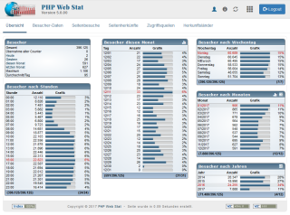

Willkommen zur PHP Web Stat!
Danke das Sie sich für die PHP-Web-Statistik entschieden haben!
Diese Quick Start Anleitung soll Ihnen helfen sowohl die Statistik zum Laufen zu bringen als auch die technischen Aspekte zu beleuchten, so dass Sie verstehen werden, wie diese überhaupt funktioniert.
Die Statistik ist komplett in PHP realisiert worden und funktioniert vom technischen Ablauf her wie folgt:
Zunächst muss in jede Seite, die aufgezeichnet werden soll, ein Javascript/NoScriptTag eingebunden werden. Sobald die Seite, die aufgezeichnet werden soll, von einem Besucher geladen wird, wird das Javascript/der NoScriptTag ausgeführt und leitet sämtliche Informationen über den Besucher an ein PHP-Script weiter, welches diese Daten als komplettes Javascript/PHP-Script mit allen Besucherinformationen innerhalb der aufzuzeichnenden Webseite darstellt. Nach Ausführung dieses Javascriptes bzw. PHP-Scriptes werden alle Besucherinformationen einschliesslich der Farbtiefe und der Auflösung an das PHP-Script übergeben.
Das PHP-Script analysiert diese Daten nun wie folgt: um den Logfile(*), der alle Informationen über einen Besucher aufzeichnet, zu verkürzen, ist ein System erstellt worden, dass nicht nur aus einem Logfile(*) besteht, sonderm zudem noch für jedes Merkmal des Besuchers eine eigene Musterdatei(**) erstellt. Somit schaut das PHP-Script zunächst nach, ob die verwendete Farbtiefe beispielsweise schon einmal aufgetaucht ist in der Musterdatei(**) und wenn ja, wird in dem Logfile(*) nur ein Link in Form einer Zahl in diesen geschrieben. Somit erhält der Logfile(*) jeweils nur ein Kürzel für jedes der aufgezeichneten Elemente. Sollte ein Wert noch nicht in einer der Musterdateien(**) vorhanden sein, so wird ein neuer Wert automatisch erstellt und mit einem Kürzel in Form einer Zahl benannt.
Aufzeichnung in Textdatei
Sämtliche Informationen über einen Besucher werden in der logdb_backup.dta im Verzeichnis LOG abgespeichert. Die Musterdateien erkennen Sie an dem Namen "pattern_MUSTER.dta". Lediglich die Muster für die Benennung der jeweils aufgezeichneteten Seite können per Hand im Admin-Center händisch eingetragen werden.
Aufzeichnung in Datenbank
Sämtliche Informationen über einen Besucher werden in der Datenbank-Tabelle PREFIX_main abgespeichert. Alle weiteren Datenbank-Tabellen werden für die Muster benutzt. Lediglich die Muster für die Benennung der jeweils aufgezeichneteten Seite können per Hand im Admin-Center händisch eingetragen werden.
Weiterhin verwendet die Statistik einen Dateicache, der es ermöglicht, dass nicht immer der komplette Logfile gelesen werden muss, sondern nur die jeweils hinzugekommenen Einträge. Somit kann die Statistik auch bei vielen Einträgen immer noch schnell geladen werden und belastet nicht die Resourcen des Servers.
* Unter der Bezeichnung Logfile kann sowohl eine Textdatei als auch eine Datenbank-Tabelle verstanden werden.
** Unter eine Musterdatei kann sowohl eine Textdatei als auch eine Datenbank-Tabelle verstanden werden.